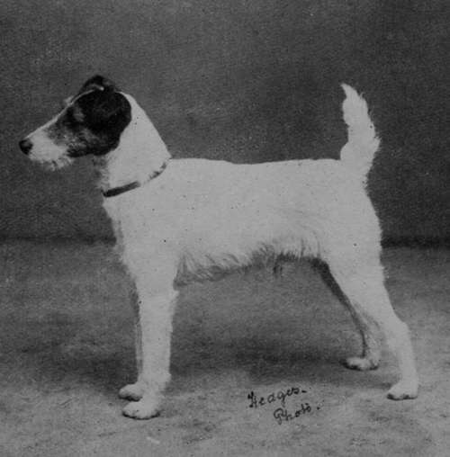

Standard Of Points Recommended By The Fox Terrier Club
Description
This section is from the book "Sporting Dogs. Their Points And Management In Health, And Disease", by Frank Townend Barton. Also available from Amazon: Sporting Dogs; Their Points and Management in Health and Disease.
Standard Of Points Recommended By The Fox Terrier Club
Head And Ears (Value 15)
The skull should be flat and moderately narrow, and gradually decreasing in width to the eyes. Not much "stop" should be apparent, but there should be more dip in the profile between the forehead and top jaw than is seen in the case of a Greyhound. The cheeks must not be full.
The ears should be V-shaped and small, of moderate thickness, and dropping forward close to the cheek, not hanging by the side of the head like those of a Foxhound.
The jaw, upper and under, should be strong and muscular; should be of fair punishing strength, but not so in any way to resemble the Greyhound or modern English Terrier. There should not be much falling away below the eyes. This part of the head should, however, be moderately chiselled out, so as not to go down in a straight line like a wedge.
The nose, towards which the muzzle must gradually taper, should be black.
The eyes should be dark in colour, small, and rather deep-set, full of fire, life, and intelligence; as nearly as possible circular in shape.
The teeth should be as nearly as possible level, i.e., the upper teeth on the outside of the lower teeth.
Neck (Value 5)
The neck should be clean and muscular, without throatiness, of fair length, and gradually widening to the shoulders.

Smooth Fox Terrier Champion Cymro Queen (Property of Mr. A. Jowett).
Miss Lewis's Wire-haired Fox Terrier Champion Donington Venture.
Mr Scott's Smooth Fox Terrier Millgate Bandit.
Shoulders And Chest (Value 10)
The shoulders should be long and sloping, well laid back, fine at the points, and clearly cut at the withers.
The chest deep and not broad.
Back And Loin (Value 10)
The back should be short, straight, and strong, with no appearance of slackness.
The loin should be powerful and very slightly arched. The fore-ribs moderately arched, the back-ribs deep, and the dog well ribbed up.
Hind Quarters (Value 15)
Should be strong and muscular, quite free from droop or crouch; the thighs long and powerful; hocks near the ground, the dog standing well up on them like a Foxhound, and not straight in the stifle.
Stern (Value 5)
Should be set on rather high and carried gaily, but not over the back or curled. It should be of good strength, anything approaching a " pipe-stopper" tail being especially objectionable.
Legs And Feet (Value 15)
The legs viewed in any direction must be straight, showing little or no appearance of an ankle in front. They should be strong in bone throughout, short and straight to pastern. Both fore- and hind-legs should be carried straight forward in travelling, the stifles not turned outwards. The elbows should hang perpendicular to the body, working free of the sides. The feet should be round, compact, and not large, the soles hard and tough, the toes moderately arched, and turned neither in nor out.
Coat (Value 10)
Should be straight, flat, smooth, hard, dense, and abundant. The belly and under side of the thighs should not be bare.
As regards colour,white should predominate, brindle red, or liver markings are objectionable. Otherwise this point is of little or no importance.
Symmetry, Size, And Character (Value 15)
The dog must present a general gay, lively, and active appearance ; bone and strength in a small compass are essentials, but this must not be taken to mean that a Fox Terrier should be cloddy, or in any way coarse—speed and endurance must be looked to as well as power, and the symmetry of the Foxhound taken as a model. The Terrier, like the Hound, must on no account be leggy, nor must he be too short in the leg. He should stand like a cleanly-made hunter, covering a lot of ground, yet with a short back as before stated. He will then attain the highest degree of propelling power, together with the greatest length of strides that is compatible with the length of his body. Weight is not a certain criterion of a Terrier's fitness for his work—general shape, size, and contour are the main points, and if a dog can gallop and stay, and follow his fox up a drain, it matters little what his weight is to a pound or so—though, roughly speaking, it may be said he should not scale over 20 lbs. in show condition.
Smooth Fox Terrier Dog Champion Dukedom (Property of Mr Redmond).
Photo by Reveley, Wantage.
Smooth Fox Terrier Dog, Darley Dale (Property of Mr Redmond).
Photo by Reveley, Wantage.
Wire-haired Fox Terrier Dog, Remus of Gaywood (Property of Mr Weaver).
Mr Scott's Wire-haired Fox Terrier Millgate Leader.
Continue to: